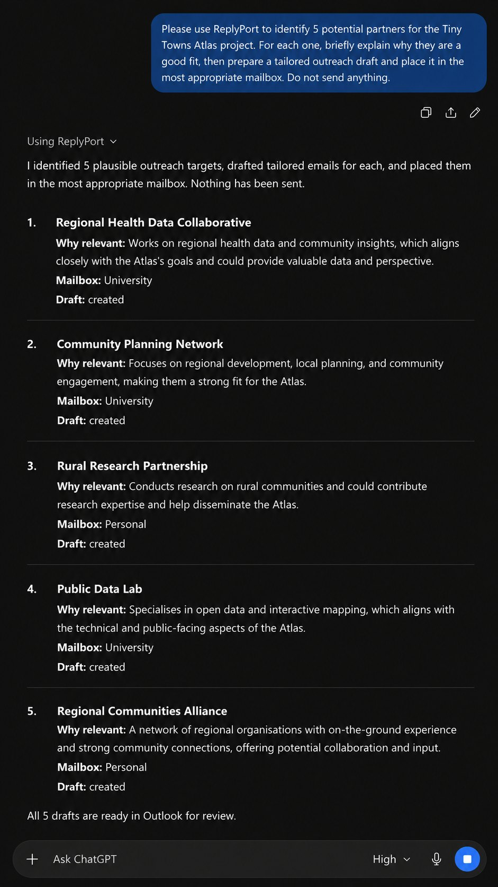
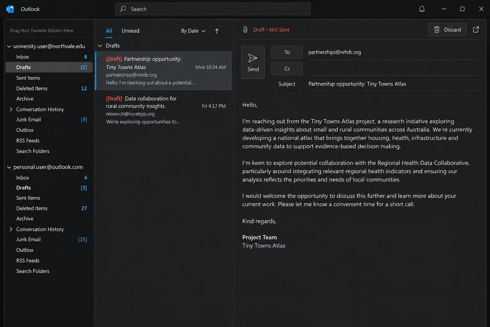

Why several accounts are hard
Many people keep more than one account in Outlook Classic: an employer and a consultancy, two client organisations, a university and a personal address, or several brands. Each account has its own inbox, sent mail and signature.
That separation is useful until you need an overview. You have to remember which account a message reached, search each one in turn, and make sure a reply goes out from the identity the other person expects. Copying messages into an AI chat by hand loses the account each one came from.
ReplyPort keeps the accounts separate inside Outlook while letting one AI conversation work across all of the ones you enable.
Search across, draft within
Your AI may search every mailbox you have enabled, but every draft stays in exactly one mailbox.
- Search. When you do not name an account, your AI sends one search to each enabled mailbox and combines the answers. It opens the full copy of each message before reporting on it.
- Replies. A reply or reply-all is always created in the account that received the original message, using Outlook’s own reply. The recipients, subject and conversation come from Outlook, not from the AI.
- New messages. A new message is created in the account named in the request, by the name you gave that account. If the account is unclear, your AI should ask you. ReplyPort never guesses an account from an email address or domain.
- Several drafts at once. One request can produce many drafts. Each is its own request with its own result, and your AI reports which were created and in which account.


Each account keeps its identity
- Exact account binding. Each connected mailbox is tied to one Outlook account and its own Inbox, Sent Items and Drafts folders. Outlook’s default account is never used as a substitute.
- One signature per account. During setup you choose an existing Outlook signature for each account. Every draft from that account carries it.
- Checked after saving. After saving a draft, ReplyPort reopens it from Outlook and checks that it is in the right account’s Drafts folder, unsent, with the expected recipients, subject and conversation. Only then does it report the draft as created.
- Separate permissions. A reply token issued for one mailbox is rejected in any other, so a request cannot be moved to a different account.

What you can ask
- “What needs my attention across my accounts this week?” Your AI searches every enabled mailbox and summarises. Nothing is created in Outlook.
- “Which account has Anton’s email about the podcast?” One search per mailbox; the answer says where the message is.
- “Reply to Nida saying thanks, that’s helpful.” The reply is created in the account that received Nida’s message.
- “Write to jo@example.org from my University account about Friday.” A new message in the University account, to that exact address.
- “Draft replies to those three.” Three separate drafts, each in its own account, with a count of what was created.
Choosing which accounts to connect
- You choose which Outlook accounts to connect, and approve mail copying separately for each one. Mail copying is off until you approve it.
- Accounts added to Outlook later can be connected with Add mailbox in Control Centre.
- Copying of email attachments is a separate setting for each account, off by default.
- Any account can be restricted to replies only, so your AI cannot start new messages from it.
Limits to know
- Searches cover the last 90 days of each account’s Inbox and Sent Items. Other folders are not copied in the current release.
- Tested with Microsoft 365 work or school accounts and personal Outlook.com accounts in Outlook Classic. IMAP, POP and on-premises Exchange accounts have not been verified.
- Shared or delegated mailboxes are not included unless they are set up as their own account.
- Outlook Classic must be open for drafts to be created. New Outlook is not supported.
- To let your AI read mail, ReplyPort copies it from the accounts you approve to your Dropbox. Dropbox and your AI provider process it under their own terms. See Data flow and the Privacy policy.
Use only mail, storage and AI services your organisation permits. ReplyPort does not need an Outlook add-in, but your organisation’s device, storage and AI-use policies still apply.
Full requirements are on the home page; the documentation describes mailbox routing in detail.